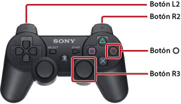

Cómo utilizar esta guía
En esta guía se incluye información detallada relacionada con la utilización del software del sistema PS3™. Para obtener información acerca de las funciones del hardware y la seguridad del producto, consulte la documentación suministrada con el sistema.
Notas sobre la visualización de la guía
Se recomienda que visualice la guía bajo las siguientes condiciones:
- Active JavaScript en su navegador. Si JavaScript está desactivado en el navegador en cuestión, es posible que la guía no se visualice correctamente o que no se visualice en absoluto.
- Cuando visualice la guía en un ordenador, utilice el navegador Microsoft Internet Explorer 6.0 o una versión posterior.
Navegación a través de la guía mediante el sistema PS3™
Utilice las funciones básicas que se indican a continuación para visualizar la guía desde  (Navegador de Internet) del sistema PS3™.
(Navegador de Internet) del sistema PS3™.
| Botones direccionales | Mueven el puntero hacia un vínculo. |
|---|---|
Botón  |
Abre el vínculo. |
| Joystick derecho | Permite desplazarse en cualquier dirección. |
| Botón L1 | Permite volver a la página anterior. |
Puede utilizar el siguiente método para utilizar el zoom en la pantalla.

| Pulse hacia abajo el botón R3 (joystick derecho) | Permite utilizar el zoom en la pantalla / cancelar zoom. |
|---|---|
| Mantenga pulsado el botón L2 o el botón R2 durante el zoom | Permite ampliar la pantalla o reducir la pantalla. |
Mantenga pulsado el botón  durante el zoom durante el zoom |
Permite cancelar el zoom en la pantalla. |
Explicación de las referencias sobre botones de la guía
Los botones del sistema PS3™ utilizados para acceder y cancelar elementos pueden variar en función de la región y el producto. A modo de convención, en las versiones en inglés y en otros idiomas europeos de esta guía se utiliza para acceder a un elemento y para cancelarlo, mientras que versiones en otros idiomas utilizarán para acceder a un elemento y para cancelarlo.
Impresión de la guía
Es posible imprimir la guía mediante un ordenador. Podrá imprimir varias páginas a la vez si sigue los pasos que se indican a continuación.
1. |
Utilice Microsoft Windows Internet Explorer para visualizar el [Índice del manual] de esta guía. |
|---|---|
2. |
Seleccione [Imprimir] en el menú Archivo de Internet Explorer. |
3. |
Seleccione la pestaña [Opciones] y, a continuación, marque la casilla de verificación [Imprimir documentos vinculados] para imprimir la guía. |